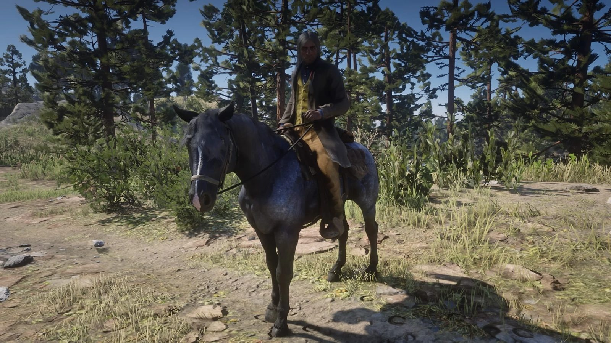
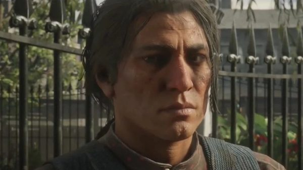
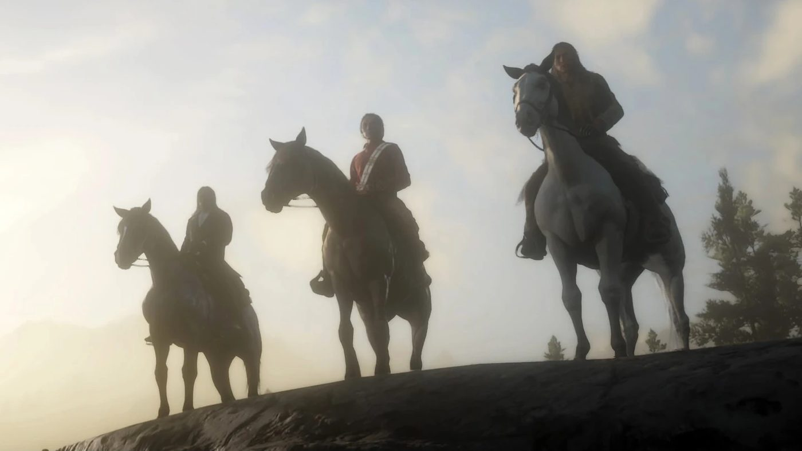

Character · Wapiti
Rains Fall
Rains Fall is the chief of the Wapiti, a Native American nation living on a reservation in the Grizzlies East, in Red Dead Redemption 2.
He says he has signed three treaties with the United States government, and that all three were broken. He seeks a peaceful way to keep his people's land, while his son Eagle Flies wants to fight the Army.
- Nation
- Wapiti
- Role
- Chief
- Home
- Wapiti Indian Reservation, Grizzlies East
- Son
- Eagle Flies
- Status
- Alive in 1907
- Games
- Red Dead Redemption 2
Biography
Family
Rains Fall says that his elder son was killed by a drunken soldier, and that a soldier killed his wife. Eagle Flies is his last surviving child. He fought as a young man and now argues for peace.
Chapter 4: the reservation claim
In "American Fathers I", Rains Fall meets Arthur outside the courthouse in Saint Denis, with Eagle Flies and the writer Evelyn Miller. The Wapiti believe Leviticus Cornwall's claim on their reservation may be illegal, and that documents could prove it. Arthur agrees to help.
Chapter 6: the war with the Army
In "Archeology for Beginners", an optional mission, Rains Fall reproaches Arthur for riding with Eagle Flies on a raid, and notices his cough. Arthur recovers a sacred object for him from a site disturbed by the Army.
In "The Fine Art of Conversation", he comes to the gang's camp at Beaver Hollow and asks Arthur and Charles to escort him to a truce meeting with Colonel Henry Favours. The talks fail. Favours announces that Captain Monroe, an officer sympathetic to the tribe, will be tried for treason. Arthur and Charles get Monroe out.
In "The King's Son", Rains Fall says his son is foolish but that he loves him. Arthur and Charles free Eagle Flies from Fort Wallace. In "My Last Boy", Rains Fall rides into Beaver Hollow and begs the warriors not to attack the Army. Eagle Flies ignores him. After the battle at the Heartland Oil Fields, Eagle Flies is brought back to the reservation and dies in his father's arms.
After 1899
In the 1907 epilogue, Rains Fall can be met on a bench at the Annesburg train station. He explains that his people have fled to Canada, and that he has come back for a time to mourn Eagle Flies.
Relationships

Eagle Flies
His son, who rejects his call for peace.

Arthur Morgan
Helps the Wapiti in Saint Denis and in chapter 6.

Charles Smith
Escorts him to the truce meeting with Colonel Favours.

Leviticus Cornwall
The industrialist whose claim threatens the reservation.

Dutch van der Linde
Backs Eagle Flies' raids to draw the Army's attention away from the gang.
Behind the scenes
Rains Fall is played by Graham Greene, a Canadian actor of the Oneida Nation, who died on September 1, 2025 in Toronto, at the age of 73. The Wapiti are a fictional nation; the in-game captions identify the language of his non-English lines as Lakota.
Gallery
